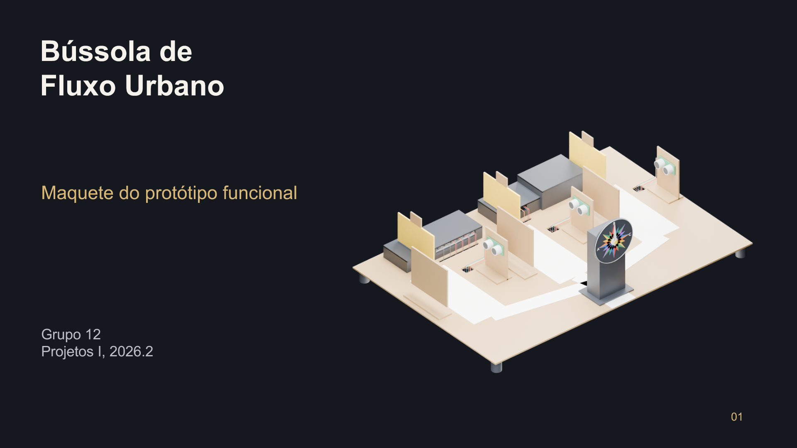

BÚSSOLA DE FLUXO URBANO
Atlas 3D
Blueprint
PowerPoint editável

Bússola de Fluxo Urbano
←
1 / 18
→
Índice
Tela cheia
Setas para navegar. Home e End para início e fim. F para tela cheia.
Descrição e detalhes deste slide
Índice da apresentação
Fechar